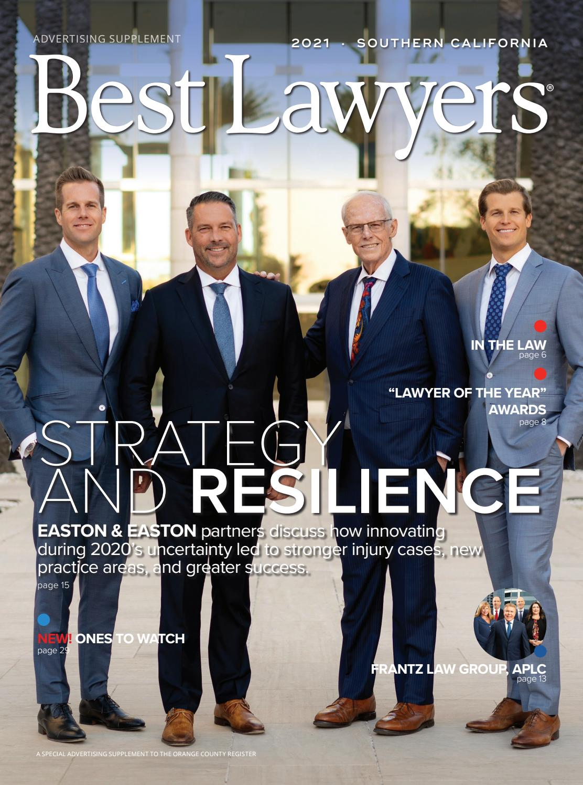

Julien Jihanian
I am currently a first year undergraduate Political Science major, I plan to go to law school after I graduate from UCR and plan to pursue a career in law. I'm still not sure what type of lawyer I want to be, I plan on interning for some laywers to see what it's really like to be a lawyer.
The law schools I would really like to get into are USC, UCLA, UCI, Harvard, and Columbia. I want to slowely build a resume for law school in order to show the best of myself as much as I can. Recently, I join UCRs Global Legal Brigade club where at the end of the year they go to developing countries like Honduras and shadow family law attorneys and basically get a feel for what it's like to practice law. I feel participatin in this club will not only be good for a law schoo resume, but to also help out others who like us do not have their basic unalienable rights like we do. I'm about seeing justice and equality for everyone and I strongly believe in this. That's why I feel my career in. law will be a very successful one I feel, I like to challenge any kind of idea with facts and evidence which I feel is what most lawyers do.
My interest in law began, when in elementary school we learned about the branches of government for the first time. I found out that my fascination with the history of our countries politics and government made me fascinasted that I considered becoming a lawyer when I grew up. I still feel that same passion in me today and it's what motivates me to become a lawyer and hopefully pursue it after college. I feel by having the right connections and getting myself a good internship I will be able to futher see what actually being an attorney is and not just making thisn statement of saying I want to be an attorney. I can't wait to see what my future brings me in my law career and this is something I truly feel that it's the right thing to pursue and I don't think I would want to pursue anything else.
Experience
Developer
• In Global Legal Brigade Club
• Worked at front desk of warehouse
• Real Estate with father
Cashier
• Helped out with front desk and answered phones
• Also did some filing and a little bit of paperwork
Teaching Assistant
• Ran sessions to help students learn how to code
• Reviewed and graded student coding projects
• Created educational content to help promote student education
• TA'd for over 400 students each academic quarter
Education
UC Riverside
University of California Riverside
University of California Riverside
Portfolio

.jpeg)
.jpeg)